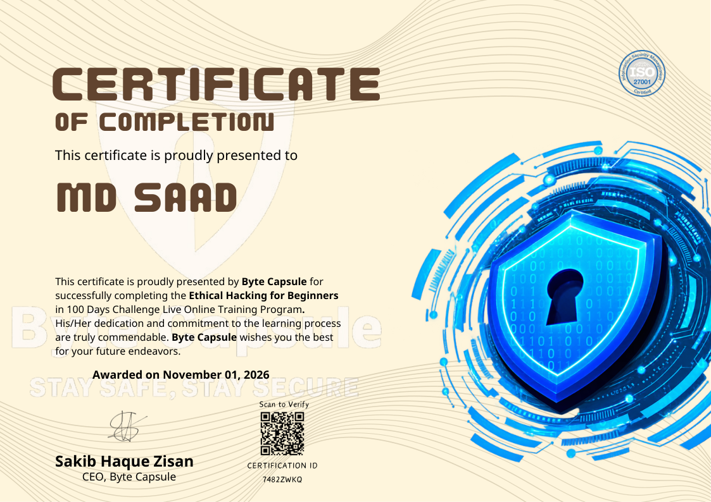

In progress
Foundations.
Understanding the essentials before moving further.
- Ethical hacking fundamentals
- Networking basics
- Linux fundamentals
- Reconnaissance concepts
01 / LEARNING IN PUBLIC
ZTRACE / CYBERSECURITY PORTFOLIOHELLO, I'M
CSE STUDENT CYBERSECURITY BEGINNER
I'm beginning my cybersecurity journey, building strong foundations in Linux, computer networking and reconnaissance—while keeping every exercise authorized and responsible.
LEARNING / ETHICAL HACKING FOR BEGINNERS · BYTE CAPSULE
02 / ABOUT ME
I'm Md Saad.
And this is where my cybersecurity journey begins.
whoami
md-saad: cse student / cybersecurity beginner
cat status.txt
ls ./connect
I'm Md Saad, a CSE student beginning my journey into cybersecurity. I'm currently developing my understanding of ethical hacking through structured learning and practical exploration.
My interests include Linux, computer networking and reconnaissance fundamentals. I believe cybersecurity requires curiosity, discipline and responsibility. My goal is to keep learning, practice only in authorized environments and document my progress honestly.
Cybersecurity begins with curiosity.
Trust is built through responsible practice.
03 / THE LEARNING PATH
What I'm exploring now, what I want to try next,
and the direction I'm working toward.
In progress
Understanding the essentials before moving further.
Planned
Turning future understanding into responsible exploration.
Long-term
Grow toward a professional cybersecurity career through consistent learning and responsible practice.
Stay curious.
Build with intention.
Keep learning.
Every exercise starts with permission, a clearly defined scope, and a learning objective. I only practise in environments where I am explicitly authorized.
AUTHORIZED PRACTICE ONLY.04 / THE WORKBENCH
A practical look at the tools I'm getting familiar with. Every one of them is still part of my learning process.
Learning environment
Beginner explorationNetwork discovery basics
Beginner explorationPacket and protocol concepts
Beginner explorationWeb request concepts
Beginner explorationAll four tools are at beginner-exploration level. Familiarity is not the same as professional experience.
Open skill progress05 / LEARNING TRACKS
These are learning tracks and planned work—not completed professional projects or claims of practical security experience.
Learning how scope, DNS, HTTP and discovery concepts fit together before any security test begins.
Strengthening command-line habits and learning how addresses, ports and packets fit together.
A planned place to record lab objectives, permitted scope, observations and lessons from each exercise.
I'll present projects as completed only when there is real implementation and evidence to show.
View project record06 / CREDENTIALS
DOCUMENTED LEARNING MILESTONE
EARNED / COURSE COMPLETIONByte Capsule · 100 Days Challenge Live Online Training Program
This is a course-completion certificate, not a professional penetration-testing certification.

07 / BEYOND THE SCREEN
A few personal frames. Another way to meet the person
behind the learning.
A portrait from outside the screen.
A more formal frame in the same personal story.
08 / OPEN A CONNECTION
Want to talk about cybersecurity, technology, or learning? A simple hello is a good place to start.